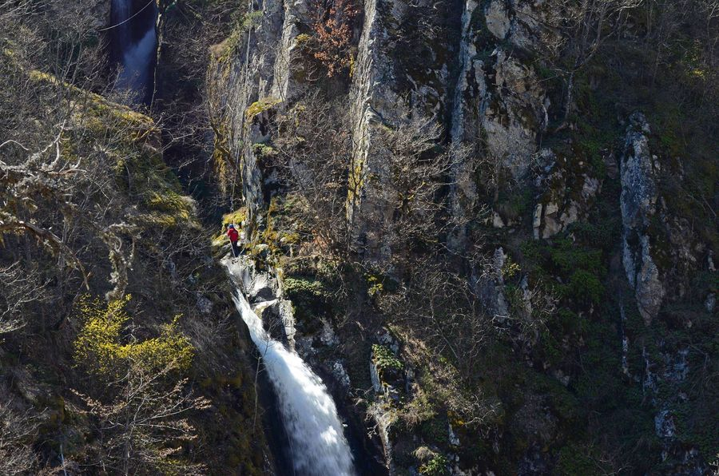

Приключенска „Цветница“ на Фотинските водопади
Скъпи приятели, време е за новото ни приключение в помощ на хората с физически увреждания.
След предишната инициатива в пещера „Проходна“, където хората имаха възможност да увиснат на въже и да усетят височината, този път сме се спрели на нещо още по-вълнуващо, преминаване по тролей над трите фотински водопада.
За водопадите
Повече за водопадите можете да намерите тук:
Транспорт
Село Фотиново се намира на територията на община Батак, област Пазарджик. До селото се стига по асфалтов път, който се разклонява от главният път между гр. Пещера и гр. Батак. От разклона до Фотиново разстоянието е около 16км. Разстоянието София-Фотиново е около 160км, а Пловдив-Фотиново около 70км.
Желателно е всеки да си организира сам транспорта до селото. От София ще има организиран транспорт за няколко човека, но нямаме възможност да организираме транспорт за всички желаещи.
Повече информация на телефонния номер, даден в края на тази покана.
Транспорт до беседката
От с. Фотиново до водопадите се стига по хоризонтален черен път с дължина около 3км. Неподходящ за нормални леки автомобили. Джипове и по-високи други автомобили могат да преминат при сухо време.
Целта е да се стигне беседката, която е до водопадите (ще бъде опънат транспарант на „Планинско спасяване- Пазарджик“). Преди нея се подминават няколко други беседки.
Организаторите ще осигурят 2-3 джипа за извозване на хората с проблеми, от селото до беседката и обратно. Другите хора ще трябва да походят пеша или да използват собствен превоз, като карането по черния път си е отговорност на всеки шофьор. Ако някой закъса ще му се помага след приключване на цялото мероприятие.
Пътят се изминава пеша, за около 40-50 мин.
За тролея
Ще бъде изграден временен тролей започващ в близост до беседката при водопадите и завършващ на площадката с изглед към водопадите. (Снимката е направена от площадката.) Дължината на тролея е около 130м., височината в най-високата част е около 40м. За движението по тролея ще отговарят спасители от „Пещерно спасяване“ и „Планинско спасяване- Пазарджик“, като за целта няма да бъде необходимо, някакво действие от страна на спускащите се. След пристигане на площадката, хората ще бъдат поети и настанени на столове, където ще могат да се порадват на гледката на течащите водопади. След пристигане на следващ човек, същите ще бъдат транспортирани обратно към беседката отново, чрез тролея. Прикачането към тролея ще се извършва посредством евакуационни седла или пещерни носилки.
Кой може да участва?
Мероприятието е насочено към хората с физически увреждания. Други хора ще бъдат пускани по тролея, преди или след приключване на работата с гореспоменатите.
Хората, които искат да се включат, трябва да бъдат психически устойчиви, без сърдечно съдови или някакви други живото-застрашаващи проблеми. Освен това хора с увреждания на гръбначния стълб и шията е възможно да получат допълнителни усложнения, като причината за това е, че транспортирането с джипове е друсащо и клатушкащо се, а става в седнало положение. Хора, които могат да бъдат увредени при този транспорт, не е желателно и редно да се включват.
Организаторите не поемат отговорност за проблеми възникнали във връзка с транспортирането или при болести, които могат да се отключат по време на приключението.
Безопасност
Месноста е силно пресчена, с вертикални отвеси до 40м. Скалите могат да бъдат хлъзгави и по тази причина не е желателно хората да се опитват да поглеждат през ръба, ако не са обезопасени с въже.
На местата, където ще бъде инсталиран тролеят, ще бъдат поставени времени ограничителни ленти, моля да не се преминава зад тях!
Всички участващи и съпровождащи ги, са длъжни да спазват указанията, давани от спасителите!
Дата и час на събитието
Събитието за хората с физически проблеми ще се състои на 21.04.2019г. (Цветница- неделя) от 11:00ч. и ще завърши след като и последният човек с проблеми бъда транспортиран към с.Фотиново.
Всички останали, могат да се спуснат по тролея преди това или след това, но не по-късно от 16:00ч. на 21.04.
Поради метеорологични причини, организатотите си запазват правото да променят датата на събитието, за друга по-късна дата, като ще напишат за това в своите сайтове и фейсбук страници, най-късно на 18.04.2019г., вечерта.
Моля да проверите дали събитието ще се състои, преди да тръгнете.
Участието в мероприятието е безплатно.
За похарчените средства ще бъде направен отчет.
Организатори и отговорности
Събитието се организира от:
Фондация „Ела и ти“- организира всичко свързано със записването и транспортирането на хората с физически проблеми до с. Фотиново.
„Пещерно спасяване“ – осигурява компетентни спасители и помощници, по-голямата част от необходимата екипировка, транспорт.
„Планинско спасяване- Пазарджик“- осигурява компетентни спасители и помощници, транспорта по черния път, комуникацията и част от екипировката.
Записване
Ако сте човек с физически проблеми, който иска да се включи в инициативата, моля да се обадите на:
Гергана Дойчинова.
От нея ще получите и допълнителна информация за организацията по транспорта от София.
Настаняване
Ако някой иска да изкара уикенда в района, може да се настани във „Вълчановата къща“, която се намира в центъра на с.Фотиново.
В района на беседката при водопадите ще бъде организиран палатков лагер, където ще отседнат част от организаторите. Хората имащи нужната бивачна екипировка, ако искат могат да се присъединят.
За доброволците
Телефонен номер за контакт с Планинско спасяване-Пазарджик .
Телефонен номер за контакт с Пещерно спасяване
Ако искате да подкрепите инициативите ни
Фондация Ела и Ти
ЕИК 177135613
